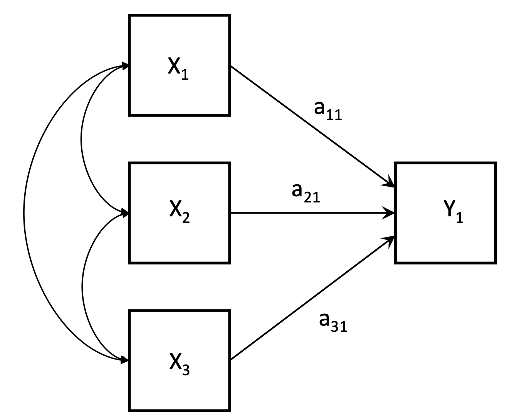
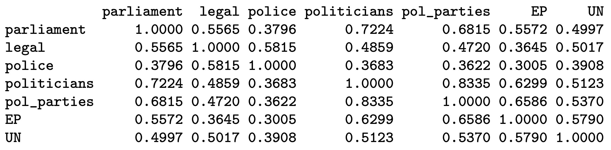
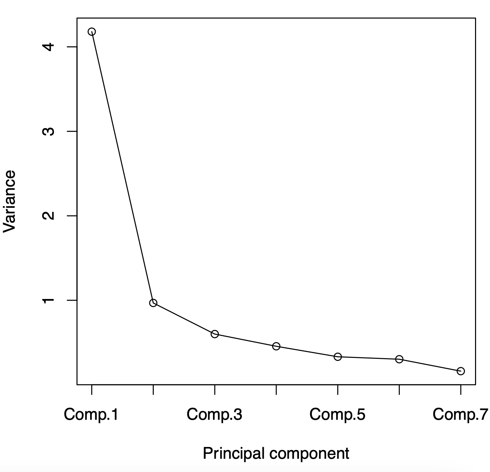
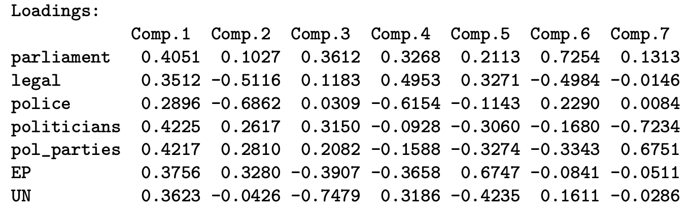

Summary goes here
1 Principle Components Analysis
Introduction
Principle Components Analysis (PCA) combines multiple observed variables into one or new observed variables (called principle components).

We might not be interested in these separate variables x_1, x_2, x_3, but instead, want to use the together to measure something. Thus, we summarise them into one (or more) variables y_1.
A survey asked respondents to respond, on a scale of 0-10, how much they trust the institutions.
- Parliament: x_1
- Legal: x_2
- Police: x_3
- Politicians: x_4
- Political Parties: x_5
- European Parliament: x_6
- United Nations: x_7
We don’t care about each variable individually. We want to summarise them into one variable that describes trust in institutions.
We can use PCA to create y_1 (and y_2, and more).
We could also be interested in dimensional reduction - reducing the number of variables we have. This could be because we want to avoid imprecise standard errors that result from high correlations between variables, or could be because we want to improve the efficiency of large models.
Observed Variables
We have p observed variables x_i, \ i = 1,2,\dots,p, measured for each unit in a sample of data.
These variables can be summarised by:
- Their sample means \bar x_i.
- Their sample variances var(x_i) and standard deviations s_i = \sqrt{Var(x_i)}.
- Sample correlations Corr(x_i, x_k) for each pair of variables i ≠ k.
- Total variance of the p variables: Var(x_1) + Var(x_2)+ \dots + Var(x_p).
The sample correlations Corr(x_i, x_k) can be summarised in a correlation matrix.
Below is an example of a correlation matrix between 7 variables (the same 7 in the example above).

Principle Components
PCA takes these original variables x_1, \dots, x_p, and calculates a set of new variables (principle components) y_1, \dots, y_p.
The principle components have the following properties:
- Each principle component is a linear combination (weighted sums) of the original variables: y_j = a_{1j}x_1 + a_{2j}x_2 + \dots + a_{pj}x_p. This allows for interpretation of the principle components.
- The principle components together have the same total variance as the original variables: \sum Var(y_i) = \sum Var(x_i). Thus, the principle components carry the same information as the original variables, just with a different distribution.
- The principle components are all uncorrelated with each other. Corr(y_j , y_k) = 0, \ \forall \ j ≠ k. Thus, the difference components convey distinct aspects of the data.
- The variances of each principle component are decreasing: Var(y_j) ≥ Var(y_{j+1}). For summarising information, we tend to only use the first few components (who have the largest variances), and ignore the rest.
The Form of Principle Components
Each principle component y_j are all linear combinations of the original variables:
\begin{split} y_1 = & a_{11}x_1 + a_{21}x_2 + \dots + a_{p1}x_p \\ y_2 = & a_{12}x_1 + a_{22}x_2 + \dots + a_{p2}x_p \\ & \vdots \\ y_p = & a_{1p}x_1 + a_{2p}x_2 + \dots + a_{pp}x_p \end{split}
Each component is a weighted sum of the original variables, with weights a_{ij}. These weights have a few properties:
- \sum_i a_{ij}^2 = 1 for each j = 1, 2, \dots, p. Or in other words, the weights should sum to 1.
- \sum_i a_{ij}a_{ik} = 0 for every pair j ≠ k, which ensures Corr(y_j, y_k) = 0: all principle components are uncorrelated with each other.
2 Mathematics of PCA
Calculating Weights
The weights a_{ij} are calculated from eigenvalue decomposition of the covariance matrix of x_1, \dots, x_p.
(a_{1j}, a_{2j}, \dots, a_{pj}) is the eigenvector corresponding to the jth eigenvalue \lambda_j.
Standardisation of Items
The results of PCA will be affected by the variances of individual variables. If Var(x_1) > Var(x_2), x_1 will receive a larger weight in PCA.
This means that if we have different measurement scales for variables, we can get very different PCA results. This is very similar to the issue of comparing covariances, which generally need to be standardised into correlation coefficients.
To prevent measurement scales from affecting PCA, we will standardise the observations for each variable, creating a new variable z_{it} (t is observations t = 1, \dots, n in the sample):
z_{it} = \frac{x_{it} - \bar x_i}{s_i}
A standardised variable has sample mean 0, and standard deviation and variance of 1. Thus, the total variance of all standardised variables z_i is equal to the number of variables:
\sum\limits_{i=1}^p Var(z_i) = p
We can also avoid the standardisation step by performing PCA on the correlation matrix instead of the covariance matrix (since correlation coefficients are already standardised).
3 Interpreting Principle Components
Properties of Principal Components
The variance of y_j, is equivalent to the jth eigenvalue:
Var(y_j) = \lambda_j
The proportion of the first q principle components is thus:
\frac{\lambda_1 + \lambda_2 + \dots + \lambda_q}{\lambda_1 + \lambda_2 + \dots + \lambda_p}
Principle components are listed in decreasing order of variance \lambda_1, ≥ \lambda_2 ≥ \dots ≥ \lambda_p.
Choosing Number of Components
You could just choose the first principle component y_1, and use it.
However, the best practice is to retain as few as possible principle components, without losing a significant amount of variability. There are a few different rules that people often use to determine how many principle components to use:
- Retain as many components q such that it explains 70-80% of the variation.
- Retain components with large eigenvalues \lambda_j, generally at least 0.7 if using the covariance matrix, and 1 for the correlation matrix.
- Omit components once \lambda_j stops decreasing significantly (using a scree plot).
Below is a scree plot of \lambda_j on the y axis, and the principle component on the y axis.

We can see after the first two principle components, the plot becomes relatively flat. Thus, we can keep components 1 and 2, and we can ignore the rest.
Generally, you will normally keep around 2 or 3 principle components following these guidelines. You should also consider the interpretation of the principle components when deciding to keep the components.
Weights and Component Loadings
Each principle component is a weighted sum of the original variables, with a_{ij} being weights:
y_j = a_{1j}x_1 + a_{2j}x_2 + \dots + a_{pj}x_p
Thus, a larger weight for a variable means that variable contributes more, and a smaller weight for a variable means that the variable contributes less.
Below is a table of weights:

We can see that it seems that police is contributing the least to the first principle component y_1.
We can also consider the weights in a normalised form, called component loadings:
a^*_{ij} = \sqrt{\lambda_j} \ a_{ij} = sd(y_j) a_{ij}
When PCA is based on the correlation matrix, we will have the property that the component loadings equals the correlation between the given variable x_i and the principle component y_j:
a^*_{ij} = Corr(x_i, y_j)
This property can help us interpret what higher values of y_j and lower values of y_j mean for each principle component.
Below is a table of component weights:

We can see that all of the component weights for the first component are positive. That means that the first principle component y_1 is positively correlated with all x_i.
We know that all x_i are scales of 0 - 10 on how much they trust the institution in question. Thus, we know that for principle component y_1, that higher values mean higher trust in institutions.
For the second principle component y_2, there are some positives and some negatives. The negative correlations are with legal, police, and UN, and the positive correlations are with parliament, politicians, political parties, and european parliament.
We could interpret this as the second principle component y_2 increases, the trust in legal/police decreases, but the trust in political institutions increase. Thus, y_2 could be a measure of trust in legal/police versus political institutions.
For the third principle component, we can see only the trust in european parliament and UN is negative. Thus, we could interpret y_2 as a measure of trust in national versus international institutions.
Weights and Correlations of Original Variables
PCA is derived from the sample correlation matrix. Thus, the weights also reflect patterns in the correlations of the original variables x_i.
Patterns between the weights of the first principle component and correlation matrix include the following:
- If the correlations of all variables is positive, then the first principle component will be positive. This is because all the variables that are correlated mean they are measuring the “same thing” in the same direction.
- Variables which on average have the largest correlations with other variables will get the largest weights. This makes sense, since variables with the largest correlations seem to be measuring the “concept” the most.
- If a variable has 0 correlation with the other variables, it will get a 0 weight, since it is measuring a completely different thing than the other variables.
Below is a correlation matrix between variables:

We can see the variable politicians (highlighted in blue) have the largest correlation with the other variables on average.
We can see the variable police (highlighted in yellow) have the smallest correlation with other variables on average. It might be the “odd one out”, not as lined up as the rest, so it gets a smaller weight in the first principle component.
The second principle component is the contrast of the first principle component (remember, the covariance between the two is 0).
It will identify two subgroups of variables, such that each subgroup will have high correlations within them, but the correlation between groups is lower.
Principle Component Scores
For each unit i (individual), we can calculate a component score for the jth principle component:
y_j = a_{1j}z_1 + a_{2j}z_2 + \dots + a_{pj}z_p
By doing this for each individual unit i, we now have a new variable y_j that we can use for further analysis. Such analyses can include:
- We could plot the principle component scores for the first and second principle component score, and look for clusters with similar values.
- We could use the principle component scores as summary statistics for some phenomena.
- We could also use the scores of y_j and input into a regression model or another statistical model.